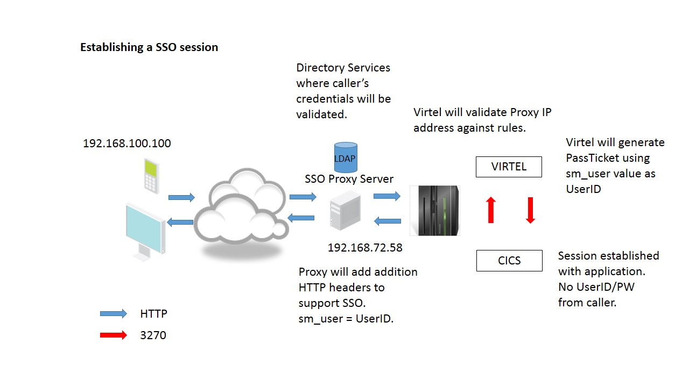
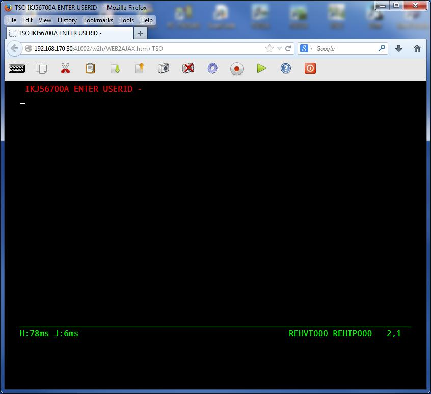

Formatting VIRTEL Line Trace¶
When taking a VIRTEL Line line the output is the standard IBM dump format. This can be formatted with the traceFormatter program which will scan through the line output and attempt to recreate the original HTML messages.

Figure 1. Example of output from Virtel Line Trace
The traceFormatter reproduces the HTML captured by the Virtel Line trace. This and can be used for protocol debugging.
Figure 2. Example of a formatted Line Trace
Running traceFormatter
Step 1 Capture a line trace and download the output to your workstation.
Capture diagnostic information on mainframe:-
f virtel,trace,l=linename Start line trace
Perform debugging work
f virtel,notrace,l=linename Stop line trace
Using the XDC line command of SDSF save the VIRTRACE file. FTP this file to your work station.
Step 2 Running the Java program
Obtain a copy of the *traceFormatter.jar* program. It is normally located on the server Partage (\\HOLT-WIN7) in the \java\traceformatter directory. Copy the directory to your c: drive. You should now have a local copy. Ensure you have a copy of the Java runtime library installed. To check, issue the following command “java -version” from a Windows command window. This will test that Java is installed correctly in your Windows environment. If it is not installed you will need to down load the latest stable JRE copy and ensure that it is in you PATH environment.

Figure3. Output from the java -version command
Step 3 Creating the trace listing.
Copy the mainframe trace listing into the c:\traceformatter directory. Run the following DOS command(s).
cd c:\traceformatter
java -jar dist/traceFormatter.jar trace.trc VIRTELLINE
This will create a file within the directory with the following format – YYYYMMDD_HHMMSS. This is the output from the trace program. Browse with NotePad++, KEDIT or some other suitable program.
** Command line format**
traceFormatter.jar trace.trc [tracetype]
tracetype = VIRTELLINE || IBM3270 || TRSF || PASSPORTLL